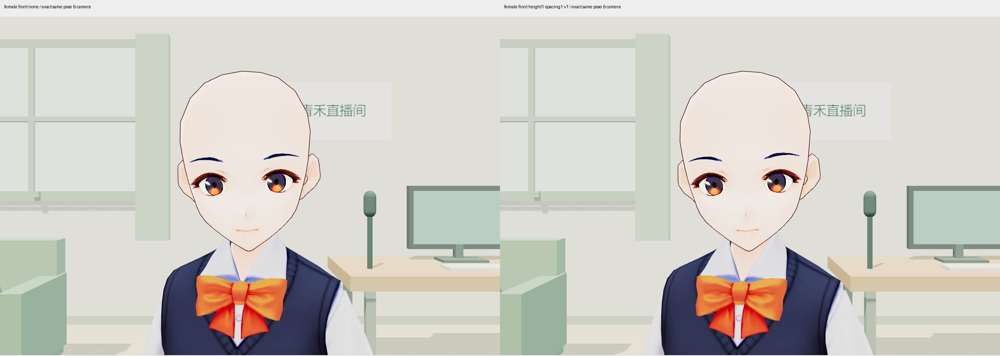
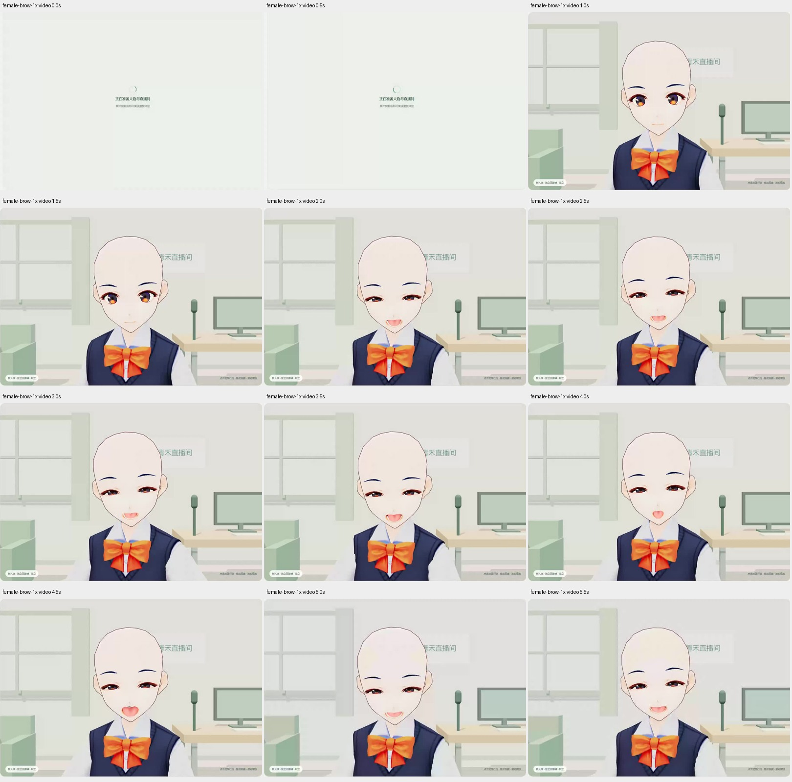

f7dd1fbb4d03 · 原男女眉位组合样件
唯一组合：眉高 +1mm、每侧向外 +1mm；不是任意五官系统。嘴宽仍仅 ±4%。9项技术检查通过，另同姿相机门通过；视觉请观看原片，勿从技术门推定自然度。
同姿原位 / 新眉位

逐值核对暂停时间、实际骨矩阵、相机外参。45°为诊断单帧视角。父目录早先静图含idle时刻差，仅作历史实拍，不用于像素差归因。
完整正常 1× 近景
保留加载准备和真实UI编辑；无发、原眉/新眉、嘴宽、讲话/微笑/自动眨眼/视线，未剪接或改速。讲话不是音频唇同步。
完整时段 2fps 工程抽审

抽帧不等同连续人工自然度验收；录像帧时间仅开发机此次窗口，不代表普通电脑达标。
结论和限制 · 实际检查 · 同姿门 · 时间采样